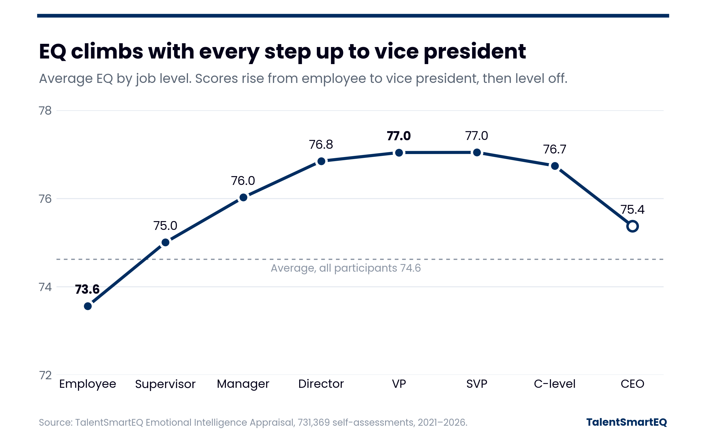

EQ & Leader Level

What the data shows
- Average EQ rises at every step of the management ladder: employees 73.6, supervisors 75.0, managers 76.0, directors 76.8 and vice presidents 77.0.
- Scores level off through senior vice president (77.0) and dip for C-level executives (76.7) and CEOs (75.4).
How this compares to our 2005 findings
In 2005 we reported in Harvard Business Review that EQ peaked at the manager level and dropped at each step above it, with CEOs scoring lowest (“Heartless Bosses?”, Bradberry & Greaves). Today’s data tells a different story. Scores keep climbing through vice president and level off at senior vice president. Then, as in 2005, EQ dips at the top of the ladder, for C-level executives and CEOs.
| Level | 2005 | 2021–2026 | Change |
|---|---|---|---|
| Employee (individual contributor) | 74.0 | 73.6 | −0.4 |
| Supervisor | 77.0 | 75.0 | −2.0 |
| Manager | 77.5 | 76.0 | −1.5 |
| Director | 74.5 | 76.8 | +2.3 |
| Vice president | 72.5 | 77.0 | +4.5 |
| Senior vice president (senior executive) | 71.0 | 77.0 | +6.0 |
| CEO | 70.5 | 75.4 | +4.9 |
Highlighted scores mark each study’s peak. The 2005 study covered more than 100,000 people, including 1,000 CEOs; today’s covers 731,369 assessments. Job titles were grouped differently in each study, and the 2005 study had no separate C-level group (76.7 today).
What it means
EQ tracks responsibility, and that relationship has changed. In 2005, TalentSmart research published in Harvard Business Review found EQ peaking at the manager level and bottoming out with CEOs, who scored below individual contributors. Today the climb continues to vice president, and senior leaders score 4.5 to 6 points higher than their 2005 counterparts while individual contributor scores are essentially unchanged. EQ still dips at the very top, though far less than it once did. This is an association, not proof of cause, but it fits nearly two decades of attention to EQ in leadership development and in how organizations choose who to promote.
Source: 731,369 Emotional Intelligence Appraisal self-assessments, 2021–2026. Scores are on a 0–100 scale.
2005 figures: Bradberry, T. & Greaves, J. (2005, December). Heartless Bosses? Harvard Business Review.
Copyright 2026 © TalentSmart Inc. All rights reserved.